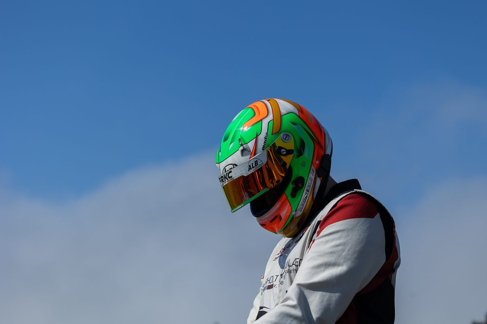
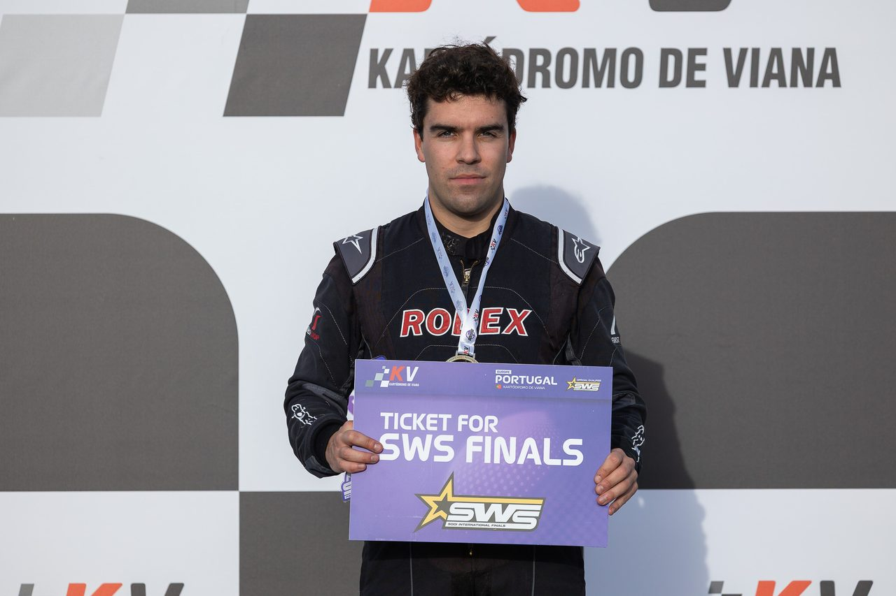
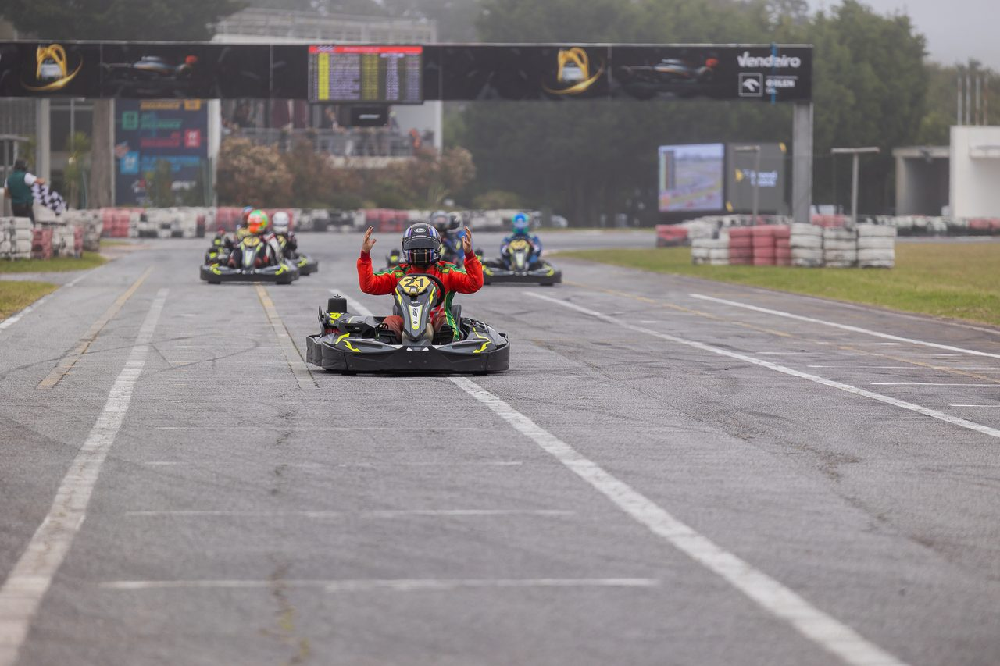
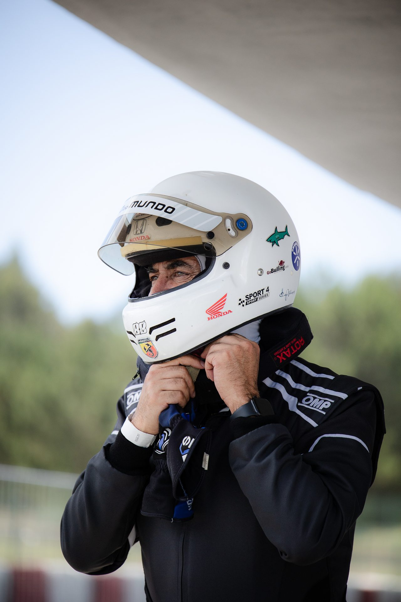

Portugal e Espanha
Fotografia de karting e motorsport
Provas, treinos e retratos de pilotos, em pista e no paddock.
O serviço
Na pista e no paddock
Fotografo as corridas e o que as rodeia: a grelha de partida, o trabalho dos mecânicos, os pilotos antes e depois de cada manga, o pódio.
Antes da prova combinamos o que é prioritário: um piloto, uma equipa ou o evento inteiro. Depois recebe as fotografias editadas, prontas para redes sociais, imprensa e patrocinadores. Já fotografei provas em Portugal e em Espanha, como a Regional Cup e a Sodi Galicia.
Em pistaUltrapassagens, travagens e lutas por posição.
No paddockPreparação, mecânicos e retratos de pilotos.
EntregaFotografias editadas, prontas a publicar.



Como funciona
Do pedido à entrega
Antes
Indique a data, o circuito e o que precisa.
Na prova
Fotografo em pista e no paddock ao longo da prova.
Depois
Recebe as fotografias editadas no prazo combinado.